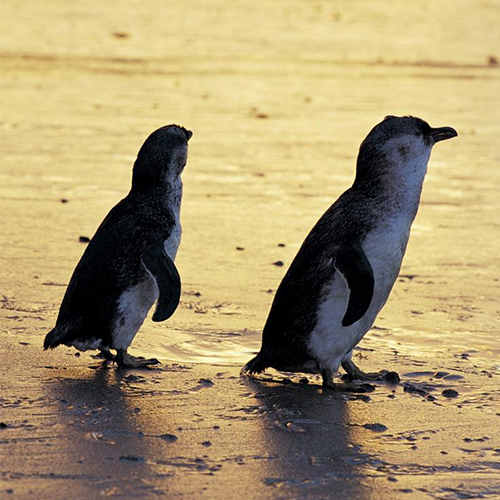

SCROLL DOWN
SCROLL DOWN
Gallery
Gallery
There is an incredible variation of landscape and culture across the continent, and deciding on the destination of your holiday is crucial. So let your interests guide you as you plan an unforgettable adventure discovering some of the country’s top destinations, events and experiences.
-
Bondi Beach
This iconic beachside neighbourhood in Sydney’s east is a dynamic pocket of sun and sand, with a bustling social scene and top-notch restaurants and cafés.
-
 Byron Bay
Byron Bay
A mecca of sand, sun and serenity, this New South Wales beach town is a coastal paradise.
-
Gold Coast
From theme parks to shopping, surfing to ancient rainforest, here’s how to make the most of the Gold Coast.
-
 Habour Bridge
Habour Bridge
It's easy to see why Sydney Harbour is regarded as one of the most beautiful natural harbours in the world.
-
Opera House
Whether you’re a local, a tourist, a first-timer or an aficionado, the Sydney Opera House has something for you.
-
Melbourne
Melbourne is Australia's mecca for all things trendy and tasty. The city offers up exquisite dining, exhilarating sport and abundant opportunities to experience art.
-
 Great Ocean Load
Great Ocean Load
Experience the rugged beauty along the south-west coast of Victoria by setting off along one of the world’s most scenic coastal drives.
-
UluRu and Kata Tjuta
The ancient rock formations of Uluru and Kata Tjuta rise from the land to make an incredible sight. Immerse yourself in the Aboriginal stories of this special place, 500 million years in the making.
-
BrisBane
Queensland’s sunny capital offers up laidback charm and urban energy with a dash of adventure.
-
 Melbourne Library
Melbourne Library
Melbourne's libraries welcome people to read, connect, create and learn.
-
 Phillip Island
This seaside haven boasts a host of attractions for nature-lovers and adventurers.
-
 Perth
Perth
Embrace the best of both worlds in Perth, where soft-sand beaches and scenic parks meet a thriving metropolis of small bars, creative restaurants and curated street art.
-
Kangaroo Island
Kangaroo Island is a nature lover's paradise, with prolific native wildlife, dramatic coastal sightseeing and bountiful farmlands.
-
 Blue Mountains
Blue Mountains
For a holiday centred around the outdoors, head to the Blue Mountains to marvel at impressive rock formations, potter around in quaint villages or explore epic wilderness.
-
 Glass House Mountains
Glass House Mountains
The beautiful Glass House Mountains are a natural playground loaded with walking tracks and epic lookouts.
-
 Kangaroo
Kangaroo
There’s no Aussie animal more iconic than our cute kangaroos.
-
 Great Barrier Reef
Great Barrier Reef
Majestic manta rays, islands teeming with turtles, lush rainforest and beautiful surf breaks; there’s a reason why we say the ‘great’ starts here.